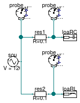

Package with example models
Information
This package contains examples for the use of models that can be found in
Buildings.Electrical.AC.OnePhase.Sensors.
Extends from Modelica.Icons.ExamplesPackage (Icon for packages containing runnable examples).
Package Content
| Name |
Description |
 GeneralizedSensor GeneralizedSensor
|
This example illustrates how to use the generalized sensor model |
| Probe
|
This example illustrates how to use the probe model |
This example illustrates how to use the generalized sensor model

Information
This example illustrates the use of the generalized sensor.
Extends from Modelica.Icons.Example (Icon for runnable examples).
Modelica definition
This example illustrates how to use the probe model

Information
This example illustrates the use of the probe model.
Extends from Modelica.Icons.Example (Icon for runnable examples).
Modelica definition
model Probe
"This example illustrates how to use the probe model"
extends Modelica.Icons.Example;
Buildings.Electrical.AC.OnePhase.Loads.Capacitive loaRC(
mode=Buildings.Electrical.Types.Load.FixedZ_steady_state,
P_nominal=-10000,
V_nominal=120)
"Constant load";
Buildings.Electrical.AC.OnePhase.Sources.FixedVoltage sou(f=60, V=120)
"Voltage source";
Buildings.Electrical.AC.OnePhase.Lines.TwoPortResistance res1(R=0.1)
"First line resistance";
Buildings.Electrical.AC.OnePhase.Sensors.Probe probe_source(V_nominal=120)
"Probe that measures at the voltage source";
Buildings.Electrical.AC.OnePhase.Sensors.Probe probe_loadRC(V_nominal=120)
"Probe that measures at the RC load";
Buildings.Electrical.AC.OnePhase.Lines.TwoPortResistance res2(R=0.1)
"Second line resistance";
Buildings.Electrical.AC.OnePhase.Loads.Inductive loaRL(
mode=Buildings.Electrical.Types.Load.FixedZ_steady_state, P_nominal=-10000,
V_nominal=120)
"Constant load";
Buildings.Electrical.AC.OnePhase.Sensors.Probe probe_loadRL(V_nominal=120)
"Probe that measures at the RL load";
equation
connect(sou.terminal, res1.terminal_n);
connect(res1.terminal_p, loaRC.terminal);
connect(sou.terminal, probe_source.term);
connect(loaRC.terminal, probe_loadRC.term);
connect(sou.terminal, res2.terminal_n);
connect(res2.terminal_p, loaRL.terminal);
connect(loaRL.terminal, probe_loadRL.term);
end Probe;
Automatically generated Mon Jul 13 14:22:39 2015.
 Buildings.Electrical.AC.OnePhase.Sensors.Examples.GeneralizedSensor
Buildings.Electrical.AC.OnePhase.Sensors.Examples.GeneralizedSensor